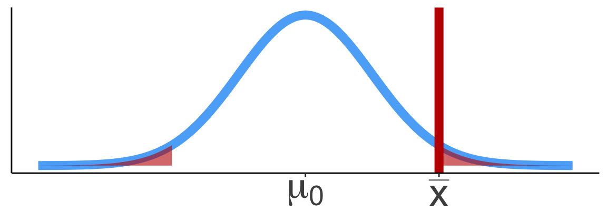
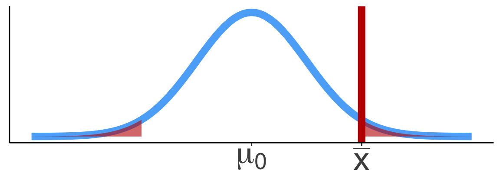
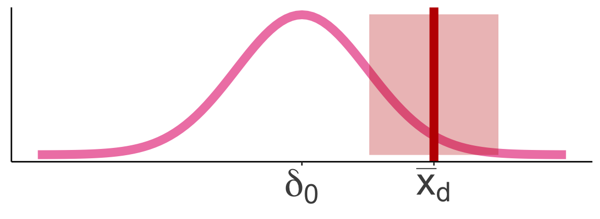

TB sections 5.2
2024-11-11
Inference for a single-sample mean includes:
Single-sample mean:

Example of hypothesis test based on the 1992 JAMA data
Is there evidence to support that the population mean body temperature is different from 98.6°F?
4-5.
Hypothesis:
\[\begin{aligned} H_0 &: \mu = 98.6\\ \text{vs. } H_A&: \mu \neq 98.6 \end{aligned}\]temps_ttest <- t.test(x = BodyTemps$Temperature, mu = 98.6)
tidy(temps_ttest) %>% gt() %>% tab_options(table.font.size = 36)| estimate | statistic | p.value | parameter | conf.low | conf.high | method | alternative |
|---|---|---|---|---|---|---|---|
| 98.24923 | -5.454823 | 2.410632e-07 | 129 | 98.122 | 98.37646 | One Sample t-test | two.sided |
| Lesson | Section | Population parameter | Symbol (pop) | Point estimate | Symbol (sample) | SE |
|---|---|---|---|---|---|---|
| 11 | 5.1 | Pop mean | \(\mu\) | Sample mean | \(\overline{x}\) | \(\frac{s}{\sqrt{n}}\) |
| 12 | 5.2 | Pop mean of paired diff | \(\mu_d\) or \(\delta\) | Sample mean of paired diff | \(\overline{x}_{d}\) | ??? |
| 13 | 5.3 | Diff in pop means | \(\mu_1-\mu_2\) | Diff in sample means | \(\overline{x}_1 - \overline{x}_2\) | |
| 15 | 8.1 | Pop proportion | \(p\) | Sample prop | \(\widehat{p}\) | |
| 15 | 8.2 | Diff in pop prop’s | \(p_1-p_2\) | Diff in sample prop’s | \(\widehat{p}_1-\widehat{p}_2\) |
Population parameter
Sample statistic (point estimate)
Question: Is there evidence to support that cholesterol levels changed after the vegetarian diet?
read.csv()glimpse()Rows: 43
Columns: 2
$ Before <int> 195, 145, 205, 159, 244, 166, 250, 236, 192, 224, 238, 197, 169…
$ After <int> 146, 155, 178, 146, 208, 147, 202, 215, 184, 208, 206, 169, 182…
get_summary_stats()How do we calculate the difference in cholesterol levels?
I can create a new variable called “DiffChol” using the mutate() function (look more closely at this in R08)
Rows: 43
Columns: 3
$ Before <int> 195, 145, 205, 159, 244, 166, 250, 236, 192, 224, 238, 197, 1…
$ After <int> 146, 155, 178, 146, 208, 147, 202, 215, 184, 208, 206, 169, 1…
$ DiffChol <int> -49, 10, -27, -13, -36, -19, -48, -21, -8, -16, -32, -28, 13,…Summary stats including difference in cholesterol:
| variable | n | min | max | median | iqr | mean | sd | se | ci |
|---|---|---|---|---|---|---|---|---|---|
| Before | 43 | 132 | 250 | 197 | 56.5 | 193.977 | 34.098 | 5.200 | 10.494 |
| After | 43 | 101 | 227 | 176 | 50.5 | 172.209 | 31.112 | 4.744 | 9.575 |
| DiffChol | 43 | -49 | 13 | -23 | 16.0 | -21.767 | 13.890 | 2.118 | 4.275 |
Single-sample mean:


Paired mean difference:


Calculate CI for the mean difference \(\delta\):

\[\overline{x}_d \pm t^*\cdot\frac{s_d}{\sqrt{n}}\]
Run a hypothesis test:
Hypotheses
\[\begin{align} H_0:& \delta = \delta_0 \\ H_A:& \delta \neq \delta_0 \\ (or&~ <, >) \end{align}\]
Test statistic
\[ t_{\overline{x}_d} = \frac{\overline{x}_d - \delta_0}{\frac{s_d}{\sqrt{n}}} \]
chol %>%
select(DiffChol) %>%
get_summary_stats(type = "common") %>%
gt() %>% tab_options(table.font.size = 40)| variable | n | min | max | median | iqr | mean | sd | se | ci |
|---|---|---|---|---|---|---|---|---|---|
| DiffChol | 43 | -49 | 13 | -23 | 16 | -21.767 | 13.89 | 2.118 | 4.275 |
95% CI for population mean difference \(\delta\):
\[\begin{align} \overline{x}_d &\pm t^*\cdot\frac{s_d}{\sqrt{n}}\\ -21.767 &\pm 2.018\cdot\frac{13.89}{\sqrt{43}}\\ -21.767 &\pm 2.018\cdot 2.118\\ -21.767 &\pm 4.275\\ (-26.042&, -17.493) \end{align}\]
Used \(t^*\) = qt(0.975, df=42) = 2.018
Conclusion:
We are 95% confident that the (population) mean difference in cholesterol levels after a vegetarian diet is between -26.042 mg/dL and -17.493 mg/dL.
One Sample t-test
data: chol$DiffChol
t = -10.276, df = 42, p-value = 4.946e-13
alternative hypothesis: true mean is not equal to 0
95 percent confidence interval:
-26.04229 -17.49259
sample estimates:
mean of x
-21.76744 | estimate | statistic | p.value | parameter | conf.low | conf.high | method | alternative |
|---|---|---|---|---|---|---|---|
| -21.76744 | -10.27603 | 4.945625e-13 | 42 | -26.04229 | -17.49259 | One Sample t-test | two.sided |
Conclusion:
We are 95% confident that the (population) mean difference in cholesterol levels after a vegetarian diet is between -26.042 mg/dL and -17.493 mg/dL.
Check the assumptions
Set the level of significance \(\alpha\)
Specify the null ( \(H_0\) ) and alternative ( \(H_A\) ) hypotheses
Calculate the test statistic.
Calculate the p-value based on the observed test statistic and its sampling distribution
Write a conclusion to the hypothesis test
The assumptions to run a hypothesis test on a sample are:
In our example, we would check the assumptions with a statement:
Before doing a hypothesis test, we set a cut-off for how small the \(p\)-value should be in order to reject \(H_0\).
Typically choose \(\alpha = 0.05\)
In statistics, a hypothesis is a statement about the value of an unknown population parameter.
A hypothesis test consists of a test between two competing hypotheses:
Example of hypotheses in words:
\[\begin{aligned} H_0 :& \text{The population mean difference in cholesterol levels after a vegetarian diet is zero}\\ \text{vs. } H_A :& \text{The population mean difference in cholesterol levels after a vegetarian diet is} \\ & \text{ different than zero} \end{aligned}\]Notation for hypotheses (for paired data)
Hypotheses test for example
We call \(\delta_0\) the null value (hypothesized population mean difference from \(H_0\))
\(H_A: \delta \neq \delta_0\)
\(H_A: \delta < \delta_0\)
\(H_A: \delta > \delta_0\)
From our example: Recall that \(\overline{x}_d = -21.767\), \(s_d=13.89\), and \(n=43\)
The test statistic is:
\[ t_{\overline{x}_d} = \frac{\overline{x}_d - \delta_0}{\frac{s_d}{\sqrt{n}}} = \frac{-21.767 - 0}{\frac{13.89}{\sqrt{43}}} = -10.276 \]
The p-value is the probability of obtaining a test statistic just as extreme or more extreme than the observed test statistic assuming the null hypothesis \(H_0\) is true.
t.test()
One Sample t-test
data: chol$DiffChol
t = -10.276, df = 42, p-value = 4.946e-13
alternative hypothesis: true mean is not equal to 0
95 percent confidence interval:
-26.04229 -17.49259
sample estimates:
mean of x
-21.76744
If \(\text{p-value} < \alpha\), reject the null hypothesis
If \(\text{p-value} \geq \alpha\), fail to reject the null hypothesis
Conclusion statement:
Example of hypothesis test
Is there evidence to support that cholesterol levels decreased after the vegetarian diet?
4-5.
Hypothesis:
\[\begin{aligned} H_0 &: \delta = 0\\ \text{vs. } H_A&: \delta < 0 \end{aligned}\]chol_ttest <- t.test(x = chol$DiffChol, mu = 0, alternative = "less")
tidy(chol_ttest) %>% gt() %>% tab_options(table.font.size = 36)| estimate | statistic | p.value | parameter | conf.low | conf.high | method | alternative |
|---|---|---|---|---|---|---|---|
| -21.76744 | -10.27603 | 2.472813e-13 | 42 | -Inf | -18.20461 | One Sample t-test | less |
t.test using the paired differences\(H_A: \delta \neq 0\)
One Sample t-test
data: chol$DiffChol
t = -10.276, df = 42, p-value = 4.946e-13
alternative hypothesis: true mean is not equal to 0
95 percent confidence interval:
-26.04229 -17.49259
sample estimates:
mean of x
-21.76744 Run the code without mu = 0. Do the results change? Why or why not?
t.test with paired = TRUE option\(H_A: \delta \neq 0\)
x= and y=mu = 0 is the default value and doesn’t need to be specified
Paired t-test
data: chol$Before and chol$After
t = 10.276, df = 42, p-value = 4.946e-13
alternative hypothesis: true mean difference is not equal to 0
95 percent confidence interval:
17.49259 26.04229
sample estimates:
mean difference
21.76744 What is different in the output compared to option 1?
Lesson 12 Slides